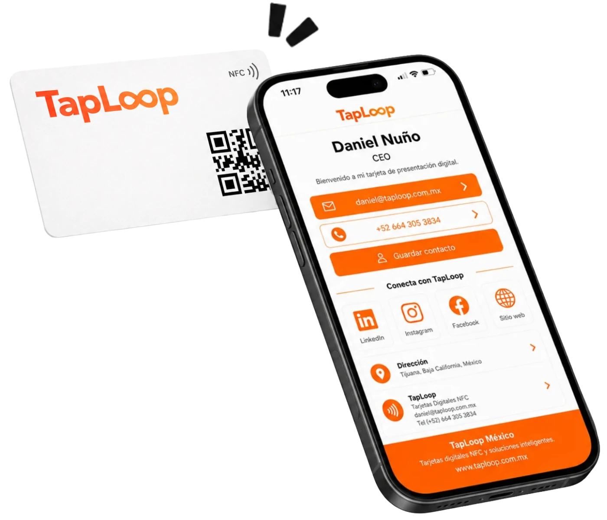
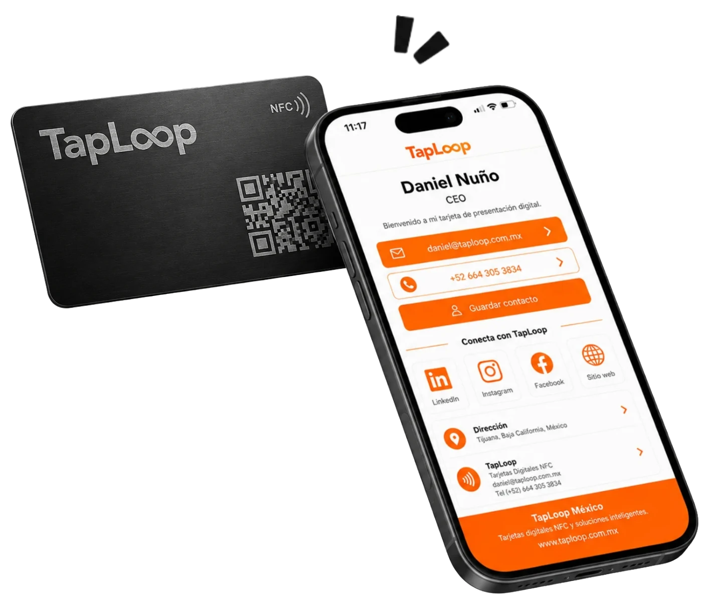

Diseñamos tarjetas NFC y perfiles digitales listos para compartir
TapLoop crea tarjetas de presentación digital NFC personalizadas para profesionales, equipos y empresas. Diseñamos la tarjeta física y el perfil digital, programamos el chip NFC, vinculamos el código QR y verificamos cada enlace antes de la entrega.
Solución completa TapLoop
De la identidad de tu marca a una tarjeta NFC lista para usar
Nos encargamos de la parte visual, digital y técnica para que puedas compartir tu información mediante NFC o código QR desde el primer día.
Servicios principales
Diseño de tarjeta y perfil digital personalizado
Creamos una propuesta visual que utiliza tu logo, colores, nombre, puesto y estilo de marca. El perfil digital organiza la información para que sea sencilla de consultar y utilizar desde un teléfono.
- Diseño alineado con tu identidad visual.
- Perfil digital individual o corporativo.
- Experiencia optimizada para dispositivos móviles.
- Sin plantillas genéricas para todos los clientes.
Tecnología y configuración
Programación NFC, código QR y enlaces
Programamos el chip NFC y vinculamos el código QR al perfil digital correspondiente. Revisamos que los botones, teléfonos, correos, redes, sitios y documentos dirijan al destino correcto.
- Chip NFC programado.
- Código QR vinculado.
- Enlaces y botones verificados.
- Pruebas antes de producción.
Perfil digital
Toda tu información profesional en un solo lugar
Cada perfil puede organizar los canales que tus clientes necesitan para conocerte, contactarte y continuar la conversación.
Guardar contacto
Facilita que tus datos se agreguen al teléfono de la otra persona.
WhatsApp y teléfono
Permite iniciar una conversación o llamada desde el perfil.
Sitio web y catálogo
Dirige a productos, servicios, presentaciones, documentos o portafolios.
Redes sociales
Concentra LinkedIn, Instagram, Facebook y otros perfiles relevantes.
Ubicación
Comparte sucursales, oficinas, consultorios o puntos de atención.
Correo y seguimiento
Ayuda a iniciar cotizaciones, propuestas y conversaciones comerciales.
Formatos disponibles
Tarjetas NFC para distintos niveles de presentación
Puedes elegir una tarjeta NFC en PVC para uso diario y equipos, o una tarjeta metálica para perfiles ejecutivos y presentaciones premium.

Tarjeta NFC + perfil digital
Tarjeta NFC Digital
Práctica, ligera y personalizable para profesionales, colaboradores, vendedores, eventos y equipos comerciales.
Ver tarjeta NFC Digital
Tarjeta NFC metálica + perfil digital
Tarjeta NFC Digital Metálica
Una opción de mayor impacto para directivos, socios, gerentes, marcas personales y reuniones ejecutivas.
Ver tarjeta NFC metálicaPara empresas y equipos
Una identidad uniforme con un perfil por colaborador
Para proyectos corporativos, creamos una línea visual consistente y personalizamos los datos de cada integrante. Cada colaborador comparte su propio perfil sin perder la identidad de la empresa.
- Diseño corporativo uniforme.
- Nombre, puesto y datos individuales.
- Tarjetas PVC, metálicas o combinación.
- Posibilidad de agregar nuevos integrantes.
Aplicaciones
Soluciones adaptadas al contexto de uso
- Equipos comerciales y ventas.
- Agencias automotrices y asesores.
- Consultores y profesionales independientes.
- Eventos, exposiciones y networking.
- Directivos, socios y perfiles ejecutivos.
Nuestro proceso
Cómo convertimos tu información en una tarjeta NFC
Te acompañamos desde la recopilación de datos hasta la entrega final.
Recopilamos tus datos
Logo, identidad visual, información de contacto, enlaces y cantidad.
Diseñamos la propuesta
Creamos la tarjeta física y el perfil digital alineados con tu marca.
Programamos y validamos
Vinculamos NFC y QR, verificamos botones, enlaces y datos.
Producimos y entregamos
Fabricamos y enviamos las tarjetas listas para utilizarse.
Preguntas frecuentes
Servicios de tarjetas NFC y perfiles digitales
Resolvemos dudas sobre el diseño, programación y entrega de las soluciones TapLoop.
¿Qué hace TapLoop?+
TapLoop diseña, programa y produce tarjetas de presentación digital NFC con perfil digital personalizado, código QR y enlaces de contacto para profesionales, equipos y empresas.
¿Qué incluye una tarjeta de presentación digital NFC?+
Incluye una tarjeta física personalizada, chip NFC programado, código QR vinculado y un perfil digital con datos de contacto, WhatsApp, correo, sitio web, redes sociales y otros enlaces.
¿El perfil digital se puede personalizar con mi marca?+
Sí. El perfil y la tarjeta se diseñan con el logo, colores, tipografía, datos y estilo visual de cada persona o empresa.
¿TapLoop crea soluciones para equipos?+
Sí. Podemos mantener una identidad visual uniforme y personalizar nombre, puesto, teléfono, correo, fotografía y enlaces para cada colaborador.
¿La otra persona necesita instalar una aplicación?+
No. El perfil digital se abre directamente en el navegador al acercar la tarjeta por NFC o al escanear el código QR.
¿Las tarjetas se entregan listas para usar?+
Sí. TapLoop programa, vincula, prueba y entrega las tarjetas listas para compartir el perfil digital.

Convirtamos tu información en una tarjeta NFC profesional
Cuéntanos cuántas tarjetas necesitas y si buscas una solución individual, ejecutiva o para todo tu equipo.
Diseño personalizado
Perfil digital
NFC + código QR
Acompañamiento durante el diseño, programación y entrega.